Computer Graphics Note 1
How to Draw a Triangle?
Howard Yao
Overview
Sometimes I like to think of computer science as raising a very curious child.
At the beginning, the computer does not really know anything. So we patiently teach it how to count, how to remember things, how to follow instructions, and how to answer simple questions. Later, we teach it how to recognize patterns, how to learn from examples, and even how to make decisions on its own, or even for us :) Slowly, this little child starts doing things that surprise us, and sometimes even things we never imagined it could do.
And finally, Computer graphics is the moment when we finally hand this child a box of crayons and teach it how to see the world.
But to this child, drawing is not natural at all. It does not understand why a bunch of strange colors, distorted shapes, and winding lines can suddenly become something meaningful and beautiful to our eyes. A triangle is just three points. A texture is just a grid of numbers. A pixel is just a tiny colored sample. So we have to teach it slowly: how shapes live on the screen, how colors blend together, how images wrap onto objects, and how tiny samples can build up into something we recognize.

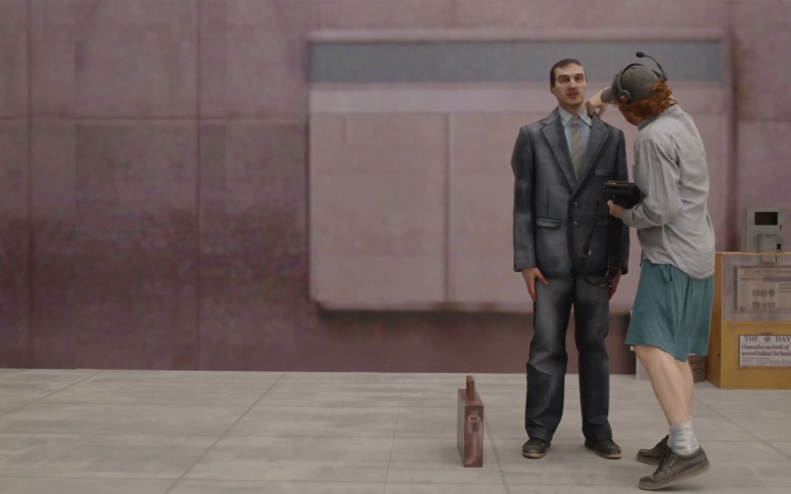
In this documentation, we will look at some of those first drawing lessons. We will explore rasterization, supersampling, interpolation, texture sampling, and mipmaps, and see how each step helps the computer turn abstract math into pictures that actually make sense to us.
Task 1: Drawing Single-Color Triangles
The goal for this task is to rasterize a triangle using the principle of sampling. That is, given any 3 coordinates on the 2D plane, and a color. Fill in every pixel enclosed by the triangle defined by the 3 coordinates with the input color. In order to understand this process, let’s first investigate how you would rasterize a point and a line!
Rasterizing a Point
void RasterizerImp::rasterize_point(float x, float y, Color color) {
// fill in the nearest pixel
//e.g: 12.7 -> 12
int sx = (int)floor(x);
int sy = (int)floor(y);
// check bounds
// check if the converted pixel coordinates are within the framebuffer bounds
if (sx < 0 || sx >= width) return;
if (sy < 0 || sy >= height) return;
// fill in the discret pixel with the given color
fill_pixel(sx, sy, color);
return;
}To start easy, to rasterize a continuous point on a discrete plane, we would want to first convert the continuous float coordinate into integers that are representable on the discrete 2D plane. Which the simplest way would be flooring the input into integers.
Next, we want to check if the given coordinate is within the frame buffer that is allowed to draw. In reality, this would be the screen where rendering would occur. In this scenario, the origin coordinate (0,0) is defined at the top left corner of the screen.
After we have validated that the pixel is within the framebuffer. We can fill in the color for that pixel.
Rasterizing a Line
// Rasterize a line.
void RasterizerImp::rasterize_line(float x0, float y0, float x1, float y1, Color color) {
// define winding order of the line from left to right(CCW rule)
if (x0 > x1) {
swap(x0, x1); swap(y0, y1);
}
// define the current point to be rasterized
float pt[] = { x0,y0 };
// calculate the slope of the line
float m = (y1 - y0) / (x1 - x0);
// define the step size for x and y based on the slope
// i.e: for a line with slope m, the step size in x is 1 and the step size in y is m
float dpt[] = { 1,m };
// check if the line is steep (i.e: slope > 1 or slope < -1)
int steep = abs(m) > 1;
// The reason for the steep check is that if the slope is steep
// we need to step in y direction instead of x direction to avoid gaps in the line
if (steep) {
// if the line is non-vertical, we normalize the step size in y direction to 1 and the step size in x direction to 1/m
dpt[0] = x1 == x0 ? 0 : 1 / abs(m);
dpt[1] = x1 == x0 ? (y1 - y0) / abs(y1 - y0) : m / abs(m);
}
// The x direction defines the winding order of the line, so we always step from small x to large x
// Notice y direction is not guaranteed to be from small to large,
// so we need to use the displacement abs(y1 - y0) to check if we have reached the end of the line in y direction
// Thus using abs(pt[1]) <= abs(y1) would be a seems reasonable but careless check
// As that would not work for lines with negative slope, when y is going downwards
while (floor(pt[0]) <= floor(x1) && abs(pt[1] - y0) <= abs(y1 - y0)) {
rasterize_point(pt[0], pt[1], color);
pt[0] += dpt[0]; pt[1] += dpt[1];
}
}Rasterizing a line is slightly more complicated than rasterizing a point because a line segment is defined by two endpoints. A single line segment does not have a winding order; winding order applies to closed polygons such as triangles. In this implementation, we reorder the endpoints so that (x0, y0), giving the algorithm a consistent traversal direction from smaller x coordinates to larger x coordinates. For a vertical line, the two endpoints have the same x coordinate, so the algorithm instead steps upward or downward according to the sign of (y1-y0).
After we have ensured that the line is always traversed from left to right. We then compute the slope () of the line, which represents the rate of change in with respect to . Since moving one pixel horizontally corresponds to a unit step in , we can use the step vector to advance along the line from left to right.
However, this approach becomes problematic when the line is steep. If (|m| > 1), the change in (y) is greater than the change in (x), meaning that a single horizontal step may cause the rasterizer to skip over multiple pixel rows and create visible gaps. To avoid this issue, we instead normalize the step with respect to (y), effectively stepping one pixel at a time in the vertical direction and adjusting (x) accordingly. This guarantees that every pixel intersected by the line is visited.
A special case occurs when the line is vertical. In this situation, , making the slope undefined and impossible to normalize the step vector. Since the line does not advance horizontally, we simply step through the (y)-coordinates one pixel at a time until the endpoint is reached.
Finally, when determining the termination condition for rasterization, the (x)-coordinate is straightforward to handle because we have already enforced left-to-right traversal. We only need to check whether (x) has reached or exceeded the endpoint. The (y)-coordinate, however, may increase or decrease depending on the line's direction, so a simple comparison is insufficient. Instead, we use the displacement from the current point to the endpoint to determine whether the rasterization has completed.
Rasterizing a Triangle
// Rasterize a triangle.
void RasterizerImp::rasterize_triangle(float x0, float y0,
float x1, float y1,
float x2, float y2,
Color color) {
// TODO: Task 1: Implement basic triangle rasterization here, no supersampling
// Naive approach, check all pixels in the framebuffer, and check if the pixel is inside the triangle
// We can optimize this by only checking pixels in the bounding box of the triangle
int min_x = max((int)floor(min(x0, min(x1, x2))),0);
int max_x = min((int)ceil(max(x0, max(x1, x2))),(int)width);
int min_y = max((int)floor(min(y0, min(y1, y2))), 0);
int max_y = min((int)ceil(max(y0, max(y1, y2))), (int)height);
// Create a "is in triangle" function to check if a point is inside the triangle
auto is_in_triangle = [](float x, float y, float x0, float y0, float x1, float y1, float x2, float y2) {
// Derive from the equation of the line formed by the two points (x0, y0) and (x1, y1)
// Binary function L = dx*(y - y0) - dy*(x - x0)
// If L > 0, the point (x,y) is on one side of the line(enclosed by the triangle)
float a = (x1 - x0) * (y - y0) - (y1 - y0) * (x - x0);
float b = (x2 - x1) * (y - y1) - (y2 - y1) * (x - x1);
float c = (x0 - x2) * (y - y2) - (y0 - y2) * (x - x2);
return (a >= 0 && b >= 0 && c >= 0) || (a <= 0 && b <= 0 && c <= 0);
};
for (int i = min_x;i < max_x;i++)
{
for (int j = min_y;j < max_y;j++)
{
if (is_in_triangle(i + 0.5, j + 0.5, x0, y0, x1, y1, x2, y2))
{
fill_pixel(i, j, color);
}
}
}
}Now, let's move on to actually rasterize a triangle! The goal for this task is to rasterize a triangle using the principle of sampling. That is, given any three coordinates on the 2D plane and a color, fill in every pixel enclosed by the triangle defined by the three coordinates with the input color.
From the idea of sampling, rasterizing a shape is in a way similar to transform every continuous information on the plane into discrete information. In this case, we can imagine that we have a function is_in_triangle() , such that given the information of the triangle and the coordinate we are checking, the function will return positive (or zero) value if the coordinate is enclosed by the triangle and negative otherwise.
Implementing is_in_triangle()
Taking inspiration from the line rasterizer and the general problem solving principle of divide and conquer. Rather than reasoning about the triangle as a geometric object, we can decompose the containment problem into three simpler orientation test. Each test determines whether a sample lies on the interior side of the edge. And the conjunction of these three test uniquely characterize the interior of the triangle.
How do we set up this orientation test though?

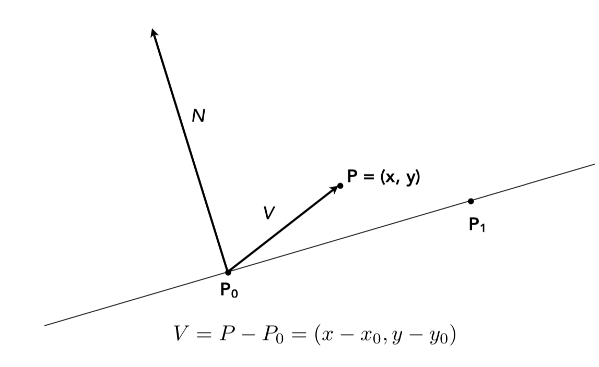
Suppose an edge goes from to , and we want to test a sample point .
The direction vector of the edge：
The vector from the start vertex to the sample point：
Take the normal vector of the edge, defined as , by finding the dot product of the vector to sample point and , we are essentially finding the projection of onto . Geometrically, this tells us on which side of the edge the sample point lies.
If , the sample point lies in the direction of the normal vector and is therefore on the interior side of the edge.
If , the sample point has no component along the normal direction, meaning it lies exactly on the edge.
Finally, if , the sample point lies opposite the normal direction and is therefore on the exterior side of the edge.
If this sounds familiar to you, this is exactly the definition of 2D cross product!
Since our goal is to determine whether a sample point lies inside the triangle. We apply the line orientation test each of the triangle’s directed edge. Each orientation test determines whether the sample point lies on the interior side of the corresponding edge. A point is considered inside the triangle only if it satisfies all three orientation tests simultaneously. Therefore, the conjunction of the three tests evaluation uniquely characterizes the interior of the triangle.
The naive approach would be doing so for every pixel in the framebuffer and ask whether the center of that pixel lies inside the triangle. While this would work, it would be extremely inefficient because most pixels on the screen have nothing to do with the triangle. Instead, we can compute the minimum and maximum x and y coordinates among the three vertices to form the tightest rectangle that contains the triangle. So that only pixels inside that region needs to be tested.
For every pixel in the bounding box, we want to sample at the center of the pixel, (x + 0.5, y + 0.5), as specified in the assignment. An often overlooked detail in this task is that the is_in_triangle() test is achieved by checking whether the sample lies within the intersection of the regions enclosed by the three edge vectors that form the triangle. This is done using an edge function derived from the 2D cross product (or signed area test) between the edge vector and the vector from the edge's starting vertex to the sample point.
One consequence of this approach is that the sign of the edge function depends on the winding order of the triangle. If we only check for positive edge values, then only triangles with a counterclockwise (CCW) winding order will be rasterized correctly. Likewise, checking only for negative values would only work for clockwise (CW) triangles. To accommodate both cases, the is_in_triangle() test is triggered when all three edge functions are nonnegative or when all three edge functions are nonpositive. Additionally, samples that produce an edge value of exactly zero are still considered inside the triangle, ensuring that pixels lying directly on the triangle boundary are rasterized rather than being left empty.
An Optimized Approach
// Rasterize a triangle.
void RasterizerImp::rasterize_triangle(float x0, float y0,
float x1, float y1,
float x2, float y2,
Color color) {
// TODO: Task 1: Implement basic triangle rasterization here, no supersampling
// Naive approach, check all pixels in the framebuffer, and check if the pixel is inside the triangle
// We can optimize this by only checking pixels in the bounding box of the triangle
int min_x = max((int)floor(min(x0, min(x1, x2))),0);
int max_x = min((int)ceil(max(x0, max(x1, x2))),(int)width);
int min_y = max((int)floor(min(y0, min(y1, y2))), 0);
int max_y = min((int)ceil(max(y0, max(y1, y2))), (int)height);
// -- Optimized approach
auto edge_function = [](float x, float y, float x0, float y0, float x1, float y1) {
return (x1 - x0) * (y - y0) - (y1 - y0) * (x - x0);
};
float start_x = min_x + 0.5f;
float start_y = min_y + 0.5f;
float a_row = edge_function(x0, y0, x1, y1, start_x, start_y);
float b_row = edge_function(x1, y1, x2, y2, start_x, start_y);
float c_row = edge_function(x2, y2, x0, y0, start_x, start_y);
float da_dx = -(y1 - y0);
float db_dx = -(y2 - y1);
float dc_dx = -(y0 - y2);
float da_dy = (x1 - x0);
float db_dy = (x2 - x1);
float dc_dy = (x0 - x2);
for (int i = min_x;i < max_x;i++)
{
float a = a_row;
float b = b_row;
float c = c_row;
for (int j = min_y;j < max_y;j++)
{
if ((a >= 0 && b >= 0 && c >= 0) || (a <= 0 && b <= 0 && c <= 0))
{
fill_pixel(i, j, color);
}
a += da_dy;
b += db_dy;
c += dc_dy;
}
a_row += da_dx;
b_row += db_dx;
c_row += dc_dx;
}The basic implementation computes the edge function independently for every pixel sample inside the bounding box. By doing so, we are performing a large amount of multiplication computation for every pixel.
To optimize this process, notice that the edge function is linear with respect to both the x and y coordinates. As each pixel progressesx+1 and y+1 , moving one pixel horizontally causes the edge function to change by a constant amount determined by the edge's y component, while moving one pixel vertically causes the edge function to change by a constant amount determined by the edge's x component. Therefore, each new sample can reuse the previous sample's edge values and update them using simple addition operations. And this rate of change is constant throughout the rasterization process.
One other small optimization is that when we define our bounding box, we can check and enforce that the box to be strictly inside the framebuffer. Thus, we are not checking any pixel outside of the screen.
Below is the render time calculated by the C++ Chrono Library, note that the render time fluctuates but overall, the optimized function has faster runtime.

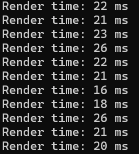


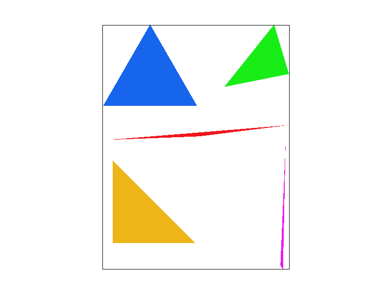
Task 2: Antialiasing by Supersampling
Supersampling or Supersampling anti-aliasing (SSAA) is a spatial anti-aliasing method that is used to avoid aliasing or jaggies (jagged and pixelated images).
In the context of signal processing, sampling is the process of converting a continuous time signal into discrete time signal by measuring the amplitude of the signal at a specific, evenly spaced time interval. This interval is the sampling period. Conversely, the reciprocal of sampling period is sampling frequency, characterized by the number of samples taken per seconds, measured in Herz (Hz). This process is also known as Analog-to-digital conversion (ADC) in electrical engineering.

Aliasing is a phenomenon that occurs when a continuous signal is sampled at a frequency that is too low to accurately represent the original signal. This results in distortion and artifacts when the signal is reconstructed from the samples, causing the reconstructed signal to differ from the original signal.
In the example above, five signals with different frequencies are sampled. When the original signal has a relatively low frequency, the discrete samples can accurately reconstruct it. However, when a higher-frequency signal is sampled at the same sampling rate, the samples fail to capture the original signal’s behavior and represent an incorrect frequency. This is an example of aliasing or undersampling.
Nyquist-Shannon Sampling Theorem
The Nyquist sampling theorem stated that to perfectly reconstruct a signal from its samples, the sampling frequency must be at least twice the maximum frequency component in the original signal. This minimum rate is called Nyquist Rate.
By applying the concept of sampling to rasterization, we can reduce jagged edges (aliasing) by increasing the sampling rate. In practice for supersampling, this means rasterizing the image at a higher resolution and then downsampling it to the final display resolution. Equivalently, we can think of this process as sampling the scene with smaller pixels, allowing finer geometric details and edge coverage to be captured more accurately.

From Rasterization to Antialiasing
In Task 1, every pixel was represented by the color of a single sample located at the center of each pixel. A pixel was either full colored (inside the triangle) or white (outside the triangle). While this approach is simple, it introduces visible aliasing and artifacts along the edges of the triangle. The rasterized result now lost the characteristic of the sharp edge of the triangle. Rasterizer now only makes binary decision, all diagonals and curves across a pixel can now no longer be represented correctly and are approximated at squares.

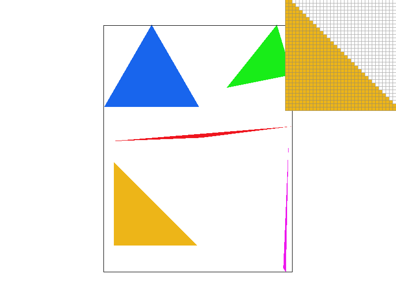
To address this problem, we can utilize the idea of supersampling to reduce aliasing. Instead of representing a pixel with one sample, each pixel is now divided and arranged evenly into multiple samples on the pixel. And the final representing color of the pixel will now be determined by averaging the color of all samples in the pixel.
Frame Buffer
The first modification we can make is by noticing that supersampling is essentially sampling the image at a higher sampling rate. In our case, more sample points in each pixel. Then downsampling the result into final output.
Previously in task 1, the color of each pixel is directly mapped onto the frame_buffer array. But now as we introducing the strategy of supersampling, we need to first sample all of the color information onto a new buffer array then process and averaging them back to the frame_buffer . We define this “hub” as sample_buffer .
Because both the dimension of the frame_buffer and sampling rate may change during the runtime. We need to resize the frame_buffer whenever either quantity changes as well as accounting sampling rate while resizing.
void RasterizerImp::set_sample_rate(unsigned int rate) {
// TODO: Task 2: You may want to update this function for supersampling support
this->sample_rate = rate;
this->sample_buffer.resize(width * height * rate, Color::White);
} void RasterizerImp::set_framebuffer_target(unsigned char* rgb_framebuffer,
size_t width, size_t height)
{
// TODO: Task 2: You may want to update this function for supersampling support
this->width = width;
this->height = height;
this->rgb_framebuffer_target = rgb_framebuffer;
this->sample_buffer.resize(width * height * sample_rate, Color::White);
}Next, since supersampling is introduced, the sampling points will now change dynamically based on the sampling rate rather than strictly at the middle. Therefore, we must also update rasterize_triangle to reflect these changes. Note that this is modified from the unoptimized version of Task 1.
// Rasterize a triangle.
void RasterizerImp::rasterize_triangle(float x0, float y0,
float x1, float y1,
float x2, float y2,
Color color) {
// TODO: Task 1: Implement basic triangle rasterization here, no supersampling
// Naive approach, check all pixels in the framebuffer, and check if the pixel is inside the triangle
// We can optimize this by only checking pixels in the bounding box of the triangle
int min_x = max((int)floor(min(x0, min(x1, x2))), 0);
int max_x = min((int)ceil(max(x0, max(x1, x2))), (int)width);
int min_y = max((int)floor(min(y0, min(y1, y2))), 0);
int max_y = min((int)ceil(max(y0, max(y1, y2))), (int)height);
float sqrt_sample_rate = sqrt(sample_rate);
// Create a "is in triangle" function to check if a point is inside the triangle
auto is_in_triangle = [](float x, float y, float x0, float y0, float x1, float y1, float x2, float y2) {
float a = (x1 - x0) * (y - y0) - (y1 - y0) * (x - x0);
float b = (x2 - x1) * (y - y1) - (y2 - y1) * (x - x1);
float c = (x0 - x2) * (y - y2) - (y0 - y2) * (x - x2);
return (a >= 0 && b >= 0 && c >= 0) || (a <= 0 && b <= 0 && c <= 0);
};
for (int i = min_x;i < max_x;i++)
{
for (int j = min_y;j < max_y;j++)
{
for (int sx = 0; sx < sqrt_sample_rate; sx++)
{
for (int sy = 0; sy < sqrt_sample_rate; sy++)
{
float sample_x = i + (sx + 0.5f) / sqrt_sample_rate;
float sample_y = j + (sy + 0.5f) / sqrt_sample_rate;
if (is_in_triangle(sample_x, sample_y, x0, y0, x1, y1, x2, y2))
{
sample_buffer[(j * width + i) * sample_rate + (sy * (int)sqrt_sample_rate + sx)] = color;
}
}
}
}
}
}If you imagine the idea of supersampling, it feels a bit like a Matryoshka doll! Instead of checking a single sample within each pixel like we did in Task 1, we now divide every pixel into another grid of smaller samples and perform the same point-in-triangle test on each of those sample locations.
If the sampling rate is 4, then we are dividing the grid into 4 small pixels with the same area. More generally, we are dividing the pixel into a grid.
Therefore, we iterate every sampling point in the grid. As we progress, the offset of each sampling point is added along the way, and the sample are fed into the sample_buffer array. The offset is defined as .
When assigning, the color to the sample_buffer, we Matryoshka doll it again! First apply the index of the pixel, scale by sample_rate and then add the index of the subpixel.
void RasterizerImp::resolve_to_framebuffer() {
// TODO: Task 2: You will likely want to update this function for supersampling support
// Average the samples in the sample buffer to compute the final pixel color in the framebuffer
for (int x = 0; x < width; ++x) {
for (int y = 0; y < height; ++y) {
Color avg = Color(0, 0, 0);
for (int sx = 0; sx < sqrt(sample_rate); sx++)
{
for (int sy = 0; sy < sqrt(sample_rate); sy++)
{
avg += sample_buffer[(y * width + x) * sample_rate + sy*sqrt(sample_rate) + sx];
}
}
avg.operator*=(1.0f / sample_rate);
for (int k = 0; k < 3; ++k) {
this->rgb_framebuffer_target[3 * (y * width + x) + k] = (&avg.r)[k] * 255;
}
}
}
}Since we now introduced a hub of sample_buffer , we now need to handle the framebuffer rendering a little differently as well. Knowing that the Color class in the CGL library is just a vector representing RGB. By applying the same Matryoshka Doll idea, we sum the color of sampling_rate consecutive elements and average them and fill this color onto the pixel of the framebuffer.
Note that by doing this, the point and line rasterizers break, as they still rely on the assumption that there is only one sample stored per pixel. After supersampling is introduced, each pixel now owns multiple sample locations, but the original implementation of fill_pixel() only writes to a single entry in the sample buffer. As a result, most of the subsamples remain unchanged, causing points and lines to render incorrectly.
To fix this, modifyfill_pixel() such that assigning a color to a pixel automatically propagates that color to all sample_rate subsamples belonging to that pixel. In other words, every subsample within the pixel is given the exact same color. While this does not supersample or antialias points and lines, it preserves the original one-sample-per-pixel behavior after the averaging step, thereby restoring the functionality of the point and line rasterizers.
// Used by rasterize_point and rasterize_line
void RasterizerImp::fill_pixel(size_t x, size_t y, Color c) {
// TODO: Task 2: You might need to this function to fix points and lines (such as the black rectangle border in test4.svg)
// NOTE: You are not required to implement proper supersampling for points and lines
// It is sufficient to use the same color for all supersamples of a pixel for points and lines (not triangles)
//sample_buffer[y * width + x] = c;
// Update to account for sample rate
for (int s = 0; s < sample_rate; s++) {
sample_buffer[(y * width + x) * sample_rate + s] = c;
}
}Comparing the Results

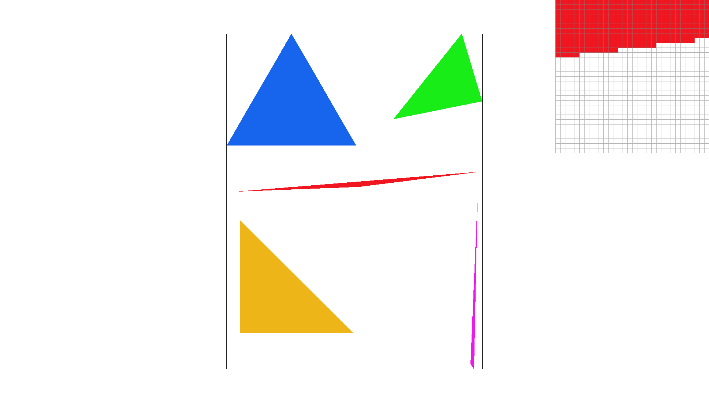


As the sampling rate increases, we observe that the colors of the pixels along the boundary gradually fade out rather than changing abruptly from red to white. The edges of the triangle also appear much smoother, making the boundary resemble a continuous line rather than a staircase of square pixels.
The reason for this behavior is that the original SVG contains a diagonal edge passing through many boundary pixels. With only a single sample per pixel, a pixel is either classified as completely inside or completely outside the triangle. However, with supersampling, each pixel contains multiple subsamples, and not all of them necessarily lie inside the triangle. Pixels that are mostly covered by the triangle will have a larger fraction of red subsamples, while pixels that are only slightly intersected by the edge will have fewer red subsamples.
When the rasterizer eventually averages all subsamples together, the final pixel color becomes proportional to the amount of the pixel covered by the triangle. Therefore, pixels near the boundary become lighter shades of red instead of switching directly from red to white, creating a much smoother transition and significantly reducing aliasing artifacts.
Jittered Supersampling
On top of grid supersampling. Jittered supersampling is an anti-aliasing technique where sample points within each pixel are randomly offset to reduce visual artifacts and produce smoother images.
In the original grid-based supersampling method, each subsample is placed at the center of a regular subpixel cell. While this is a simple way of antialiasing, the regular structure of the grid can align with certain diagonal or repeating patterns and produce visible artifacts.
To reduce this, by randomly perturb each sample position within its own subpixel cell. This keeps the same number of samples per pixel but avoids placing them in a perfectly regular pattern.

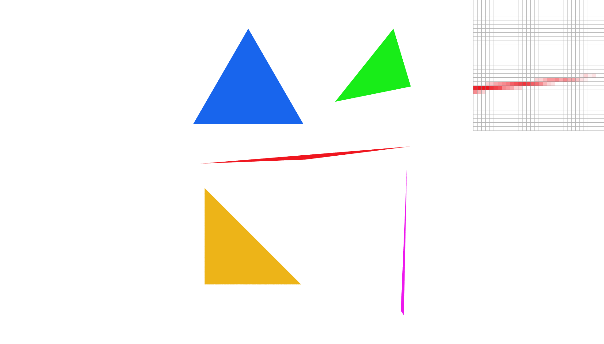

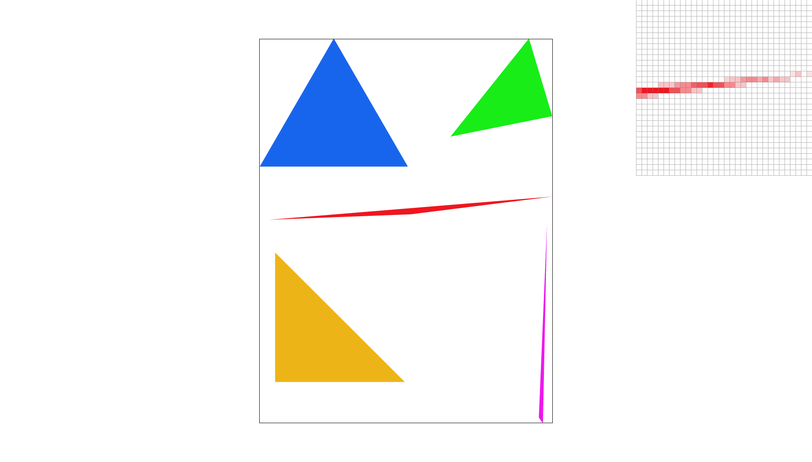
Jittered supersampling is achieved by adding a random generated offset on the original index base for the subsamples. Rather than constant 0.5, it can now range to any point in the subpixel it belongs to. The implementation is shown below and is inspired from: https://www.geeksforgeeks.org/cpp/rand-and-srand-in-ccpp/
float sample_x = i + (sx + 0.5f) / sqrt_sample_rate;
float sample_y = j + (sy + 0.5f) / sqrt_sample_rate;#include <random>
std::random_device random;
std::mt19937 gen(random());
std::uniform_real_distribution<float> dist(0.0f, 1.0f);
// Under the triangle rasterizer
float sample_x = i + (sx + dist(gen)) / sqrt_sample_rate;
float sample_y = j + (sy + dist(gen)) / sqrt_sample_rate;Task 3: Transforms
In computer graphics, when representing a coordinate in N dimensions, we often use an N+1 dimensional vector instead, where the first N elements represent the actual coordinate and the final element is typically set to 1(or any unit scalar in space). This representation is known as homogeneous coordinates.
This structure allows many common geometric transformations, such as translation, scaling, and rotation, to be represented using a unified matrix multiplication framework. One of the major benefits of doing this is that matrix multiplication naturally describes linear transformations on a vector space, making it easy to compose multiple transformations by simply multiplying their matrices together.
If we were to represent points using only an N dimensional vector, transformations such as scaling and rotation could still be expressed as matrix multiplications. Translation, however, would not be possible because it requires adding a constant offset to every coordinate rather than applying a purely linear transformation. By introducing the additional homogeneous coordinate, translation can also be represented as a matrix multiplication, allowing all geometric transformations to share the same mathematical framework.
The set of matrices corresponding to three operations are shown below:
Matrix3x3 translate(float dx, float dy) {
return Matrix3x3(1, 0, dx,
0, 1, dy,
0, 0, 1);
}Matrix3x3 scale(float sx, float sy) {
return Matrix3x3(sx, 0, 0,
0, sy, 0,
0, 0, 1);
}Matrix3x3 rotate(float deg) {
float rad = deg * PI / 180.0;
return Matrix3x3(cos(rad), -sin(rad), 0,
sin(rad), cos(rad), 0,
0, 0, 1);
}

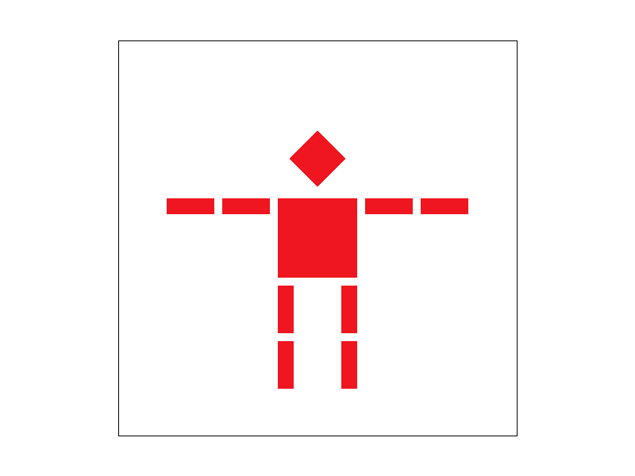

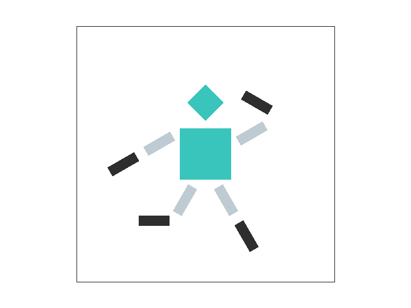

One-Legged Kawaii pose?!
(｡･∀･)ﾉﾞ
The modification is done my applying rotation operation onto every leg/arm, change the color code of each polygon while initializing, and adjust their translation parameter correspondingly in the SVG file.
View Port Rotation and Coordinate Transformations
One of the extra features implemented in this task is viewpoint rotation utilizing the rotation operation we implemented in this task. Upon rasterizing, press the key [ and ] on the keyboard to respectively rotate the geometry -5 and +5 radian counterclockwise.
Let’s first understand the processing pipeline of the SVG:
Every coordinate defined in the SVG can be in an arbitrary coordinate range, and the SVG format does not necessarily enforce a fixed boundary for all geometry. Therefore, before mapping the SVG onto the screen, we first normalize its coordinates. This is done by converting SVG coordinates into Normalized Device Coordinates (NDC), where the drawing is mapped into a unit square with width and height ranging from 0 to 1. In this coordinate system, the origin is located at the bottom-left corner.
This normalization step gives us a consistent coordinate space independent of the original SVG size. Since all SVGs are mapped into the same normalized space, this is the most convenient place to apply view rotation for us!
The conversion from NDC to screen coordinates then scales the unit square to fit inside the window. By using the smaller of the screen width and height as the scale factor, the renderer preserves the aspect ratio of the SVG and displays it as a square. The remaining space is distributed evenly on both sides, so the rendered image appears centered in the framebuffer.
The implementation below is inside the redraw() function, a new float variable viewport_rotation is introduced to keep track of angle rotation in radian as we press on the corresponding key to alternate it. We would then use this information to generate rotation matrix that we can use to apply onto the NDC matrix.
Matrix3x3 view_rot = translate(0.5, 0.5) * rotate(viewport_rotation) * translate(-0.5, -0.5);
svg.draw(software_rasterizer, ndc_to_screen * view_rot * svg_to_ndc[current_svg]);
Vector2D a = ndc_to_screen * view_rot * svg_to_ndc[current_svg] * (Vector2D(0, 0)); a.x--; a.y++;
Vector2D b = ndc_to_screen * view_rot * svg_to_ndc[current_svg] * (Vector2D(svg.width, 0)); b.x++; b.y++;
Vector2D c = ndc_to_screen * view_rot * svg_to_ndc[current_svg] * (Vector2D(0, svg.height)); c.x--; c.y--;
Vector2D d = ndc_to_screen * view_rot * svg_to_ndc[current_svg] * (Vector2D(svg.width, svg.height)); d.x++; d.y--;
case '[':
viewport_rotation -= 5.0f;
redraw();
break;
case ']':
viewport_rotation += 5.0f;
redraw();
break;Note that, as previously mentioned, the origin of NDC is located at the bottom-left corner. Therefore, if we apply the rotation matrix directly, the entire SVG would rotate around the bottom-left corner instead of its center. Visually, this is like watching a clock rotate while only seeing the hand sweep through the upper-right quadrant ☹️.
To fix this, we first translate all NDC coordinates by , which moves the center of the unit square and all geometry to the origin. We then apply the rotation matrix around the origin. Finally, we translate everything back by . This is equivalent to temporarily treating the center of the viewport as the origin, performing the rotation, and then restoring the coordinate system back to its original position.

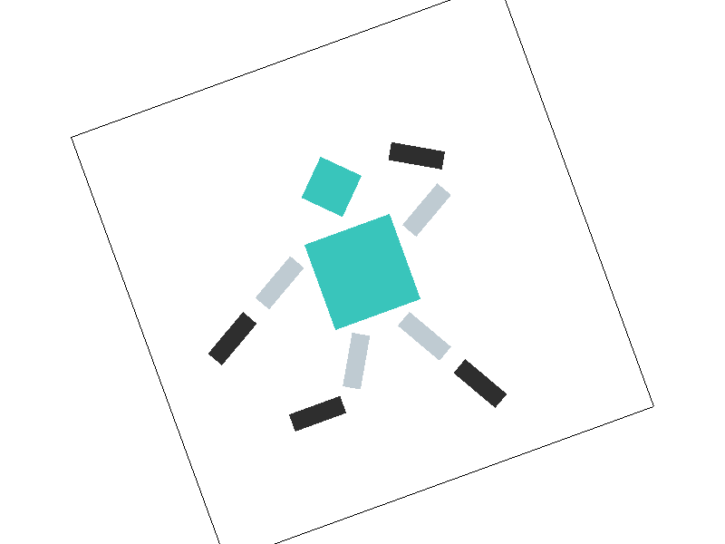
Task 4: Barycentric coordinates
Barycentric coordinates in computer graphics is a mathematical way to represent the value of the point based on its relative position from the key vertices. In our application, this is the RGB vector value used to represent color of the pixel. In Greek, the word βαρύς (barýs) means “heavy” or “weighty”, which highlight the theme of determining a value by weighting on the knowing coordinates.
This idea is introduced by the German mathematician August Möbius in 1827 where he defined this mathematical system in geometry and referring them as mass coordinate - the point where the center of mass of the geometry is placed. August Möbius is also credited with the discovery of the Möbius strip, a non-orientable, one-sided geometry.
For this task, barycentric coordinates represent a point inside a triangle where its color is the weighted combination of the triangle's three vertices. The weights sum to one and indicate the influence of each vertex on the sample point. At a vertex, the corresponding weight is one while the other two are zero. By using these weights to blend the RGB values stored at each vertex, we obtain a smoothly interpolated color gradient across the entire triangle.

For this task, instead of filling an entire triangle with one constant color, we are given the three vertices of a triangle and a different color at each vertex. Using barycentric coordinates, we can assign every sample point inside the triangle a weighted combination of the three vertex colors. This produces a smooth color interpolation as the sample point moves from one vertex to another.
In our implementation, each barycentric weight is computed as the ratio between the signed area of a sub-triangle and the signed area of the original triangle. Intuitively, a point close to one vertex will have a larger weight for that vertex, so its color will be dominated by that vertex color. Conversely, as the point moves farther away from a vertex and closer to the opposite edge, that vertex contributes less to the final color.
The area of a triangle can be computed using the cross product of two of its edge vectors. Given two vectors originating from the same vertex, the magnitude of their cross product equals the area of the parallelogram they span. Since a triangle occupies exactly half of this parallelogram, its area is simply half the magnitude of the cross product. In our implementation, we use the signed 2D cross product (equivalently, the edge function), which yields twice the signed area of the triangle and allows us to compute barycentric coordinates efficiently through area ratios. More specifically:
The implementation is shown below:
void RasterizerImp::rasterize_interpolated_color_triangle(float x0, float y0, Color c0,
float x1, float y1, Color c1,
float x2, float y2, Color c2)
{
// TODO: Task 4: Rasterize the triangle, calculating barycentric coordinates and using them to interpolate vertex colors across the triangle
// Hint: You can reuse code from rasterize_triangle
int min_x = max((int)floor(min(x0, min(x1, x2))), 0);
int max_x = min((int)ceil(max(x0, max(x1, x2))), (int)width);
int min_y = max((int)floor(min(y0, min(y1, y2))), 0);
int max_y = min((int)ceil(max(y0, max(y1, y2))), (int)height);
float sqrt_sample_rate = sqrt(sample_rate);
auto edge = [](float x, float y, float x0, float y0, float x1, float y1)
{
return (x1 - x0) * (y - y0) - (y1 - y0) * (x - x0);
};
float area = edge(x0, y0, x1, y1, x2, y2) / 2;
for (int i = min_x;i < max_x;i++)
{
for (int j = min_y;j < max_y;j++)
{
for (int sx = 0; sx < sqrt_sample_rate; sx++)
{
for (int sy = 0; sy < sqrt_sample_rate; sy++)
{
float sample_x = i + (sx + 0.5f) / sqrt_sample_rate;
float sample_y = j + (sy + 0.5f) / sqrt_sample_rate;
// alpha <-> C0
// bets <-> C1
// gamma <-> C2
float alpha = edge(sample_x, sample_y, x1, y1, x2, y2) / 2;
float beta = edge(sample_x, sample_y, x2, y2, x0, y0) / 2;
float gamma = edge(sample_x, sample_y, x0, y0, x1, y1) / 2;
bool is_in_triangle = (alpha >= 0 && beta >= 0 && gamma >= 0) || (alpha <= 0 && beta <= 0 && gamma <= 0);
if (is_in_triangle)
{
Color color = (alpha / area) * c0 + (beta / area) * c1 + (gamma / area) * c2;
sample_buffer[(j * width + i) * sample_rate + (sy * (int)sqrt_sample_rate + sx)] = color;
}
}
}
}
}
}Note that the edge function returns the signed area of the parallelogram formed by an edge vector and the vector from the edge to the sample point. The sign indicates on which side of the edge the sample point lies: positive values correspond to one side of the edge, while negative values correspond to the other.
This provides a natural way to determine whether a sample lies inside the triangle. Since barycentric coordinates are computed as ratios of these signed areas, a point inside the triangle will have barycentric weights that all share the same sign, whereas a point outside the triangle will produce at least one weight with an inconsistent sign.
Once the barycentric weights are computed, we can determine the color of each sample point by taking a weighted combination of the colors assigned to the three vertices. Since the barycentric coordinates sum to one, the resulting color smoothly interpolates across the triangle surface. Finally, this interpolated color is written into the corresponding supersample in the sample buffer, allowing the anti-aliasing process to produce smooth color transitions along the triangle boundaries.

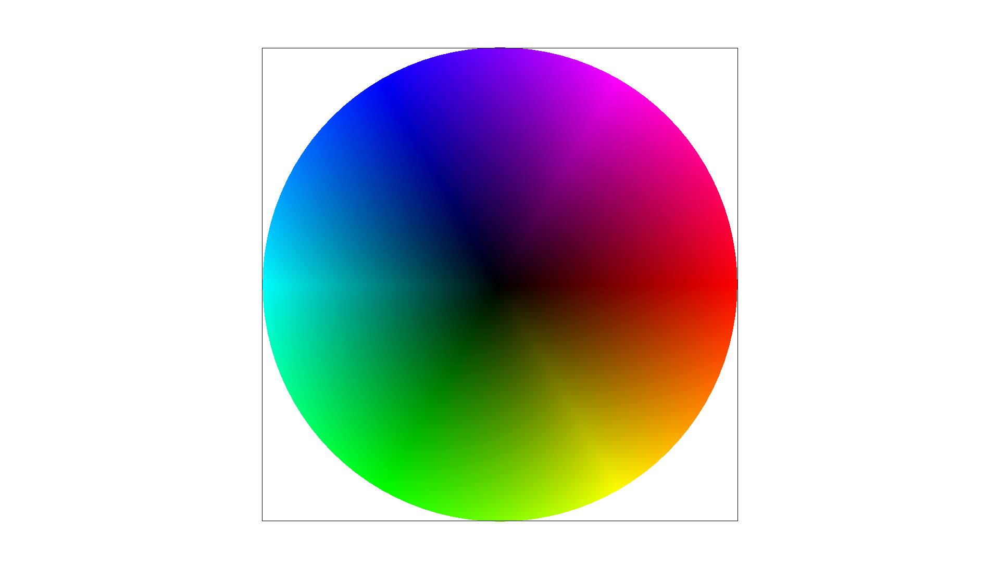
Task 5: "Pixel sampling" for texture mapping
Piexel Sampling for Texture Mapping is the process of deciding what texture color should be returned for the given sample coordinate. In this task, each vertex of the triangle is given a 2D texture coordinate , which represents a position on the texture image.
The overall idea and implementation are just like how barycentric coordinate is implemented in task 4. But instead finding the combination of the vertices and interpolating the color directly, we would interpolate the respective coordinate and assign the color from the texture map onto the object.
void RasterizerImp::rasterize_textured_triangle(float x0, float y0, float u0, float v0,
float x1, float y1, float u1, float v1,
float x2, float y2, float u2, float v2,
Texture& tex)
{
// TODO: Task 5: Fill in the SampleParams struct and pass it to the tex.sample function.
// TODO: Task 6: Set the correct barycentric differentials in the SampleParams struct.
// Hint: You can reuse code from rasterize_triangle/rasterize_interpolated_color_triangle
int min_x = max((int)floor(min(x0, min(x1, x2))), 0);
int max_x = min((int)ceil(max(x0, max(x1, x2))), (int)width);
int min_y = max((int)floor(min(y0, min(y1, y2))), 0);
int max_y = min((int)ceil(max(y0, max(y1, y2))), (int)height);
float sqrt_sample_rate = sqrt(sample_rate);
auto edge = [](float x, float y, float x0, float y0, float x1, float y1)
{
return (x1 - x0) * (y - y0) - (y1 - y0) * (x - x0);
};
float area = edge(x0, y0, x1, y1, x2, y2) / 2;
for (int i = min_x;i < max_x;i++)
{
for (int j = min_y;j < max_y;j++)
{
for (int sx = 0; sx < sqrt_sample_rate; sx++)
{
for (int sy = 0; sy < sqrt_sample_rate; sy++)
{
float sample_x = i + (sx + 0.5f) / sqrt_sample_rate;
float sample_y = j + (sy + 0.5f) / sqrt_sample_rate;
// alpha <-> C0
// bets <-> C1
// gamma <-> C2
float alpha = edge(sample_x, sample_y, x1, y1, x2, y2) / 2;
float beta = edge(sample_x, sample_y, x2, y2, x0, y0) / 2;
float gamma = edge(sample_x, sample_y, x0, y0, x1, y1) / 2;
bool is_in_triangle = (alpha >= 0 && beta >= 0 && gamma >= 0) || (alpha <= 0 && beta <= 0 && gamma <= 0);
if (is_in_triangle)
{
Color color;
Vector2D uv = (alpha / area) * Vector2D(u0,v0) + (beta / area) * Vector2D(u1, v1) + (gamma / area) * Vector2D(u2, v2);
if (psm == P_LINEAR)
{
color = tex.sample_bilinear(uv, 0);
}
else
{
color = tex.sample_nearest(uv, 0);
}
sample_buffer[(j * width + i) * sample_rate + (sy * (int)sqrt_sample_rate + sx)] = color;
}
}
}
}
}
}Since the texture is a discrete image made of texels, but the interpolated texture coordinate is usually continuous, the coordinate may not land exactly at the center of a texel. Therefore, we need a sampling method to decide how to convert that continuous coordinate into a color.
In nearest-pixel sampling, we can use the normalized texture coordinate, round it to the closest texel position, and returned the color of that single texel. This method is simple and fast, but it can create blocky artifacts because the sampled color jumps suddenly from one texel to another and does not necessarily “interpolate”.
Color Texture::sample_nearest(Vector2D uv, int level) {
// TODO: Task 5: Fill this in.
auto& mip = mipmap[level];
double u = min(1.0, max(0.0, uv.x));
double v = min(1.0, max(0.0, uv.y));
int x = round(u * (mip.width-1));
int y = round(v * (mip.height-1));
x = min((int)mip.width - 1, max(0, x));
y = min((int)mip.height - 1, max(0, y));
return mip.get_texel(x, y);
}In bilinear sampling, we will still use the coordinate as our texture space coordinates, but instead of rounding to the nearest texel, we look at the four neighboring texels around the floating point coordinate.
We first linearly interpolated between the top-left and bottom-left texels, and then between the top-right and bottom-right texels, weighted by the x and y distance of the sample point from each texel.
After that, we can then interpolate vertically between those two intermediate colors. This produces a smoother result because the returned color is a weighted blend of four nearby texels rather than a sudden choice of one texel.
Color Texture::sample_bilinear(Vector2D uv, int level) {
// TODO: Task 5: Fill this in.
auto& mip = mipmap[level];
double u = min(1.0, max(0.0, uv.x));
double v = min(1.0, max(0.0, uv.y));
int x0 = floor(u * (mip.width - 1));
int y0 = floor(v * (mip.height - 1));
int y1 = min(y0 + 1, (int)mip.height - 1);
int x1 = min(x0 + 1, (int)mip.width - 1);
float s = u * (mip.width - 1) - x0;
float t = v * (mip.height - 1) - y0;
Color c00 = mip.get_texel(x0, y0);
Color c01 = mip.get_texel(x0, y1);
Color c10 = mip.get_texel(x1, y0);
Color c11 = mip.get_texel(x1, y1);
Color c0 = c00 * (1 - s) + c10 * (s);
Color c1 = c01 * (1 - s) + c11 * (s);
return c0 * (1 - t) + c1 * (t);
}Here we will compare four images:
- Nearest sampling with 1 sample per pixel
- Nearest sampling with 16 samples per pixel
- Bilinear sampling with 1 sample per pixel
- Bilinear sampling with 16 sample per pixel

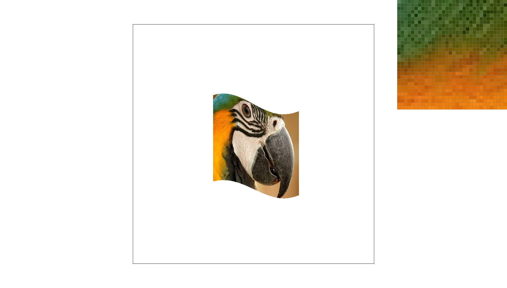
Nearest sampling at 1 sample per pixel produced the roughest result, with both jagged triangle edges and blocky texture details. This is especially severe and obvious when looking at details where rapid color changes occurs.


Bilinear sampling at 1 sample per pixel made the texture appear smoother, although the triangle edges could still show some aliasing.

Bilinear sampling at 16 samples per pixel produced the smoothest overall result because it combined smoother texture lookup with supersampling.
Task 6: "Level Sampling" with mipmaps for texture mapping
In Task 5, every texture lookup sampled from the original texture image. However, when a texture is viewed from far away, many texels may map to a single screen pixel, causing aliasing artifacts. To address this, we can implement level sampling using mipmaps, which store progressively lower-resolution versions of the same texture to adapt the aliasing from far range.
To determine the appropriate mipmap level, we need to compute the interpolated UV coordinates at the current sample position (x,y), (x+1,y), and (x,y+1). The differences between these coordinates estimate how quickly the texture coordinate changes across screen space. After scaling these differences by the width and height of the original texture, compute the texture footprint and used:
to estimate the desired mipmap level.
float Texture::get_level(const SampleParams& sp) {
// TODO: Task 6: Fill this in.
Vector2D dx_uv = sp.p_dx_uv - sp.p_uv;
Vector2D dy_uv = sp.p_dy_uv - sp.p_uv;
const auto& mip = mipmap[0];
float dx_u = dx_uv.x * mip.width;
float dx_v = dx_uv.y * mip.height;
float dy_u = dy_uv.x * mip.width;
float dy_v = dy_uv.y * mip.height;
double len_x = sqrt(dx_u * dx_u + dx_v * dx_v);
double len_y = sqrt(dy_u * dy_u + dy_v * dy_v);
double level = log2(max(len_x, len_y));
return level;
}The three level sampling modes:
- L_ZERO: Always sample from mipmap level 0 (original texture).
- L_NEAREST: Compute the mipmap level and round to the nearest integer level.
- L_LINEAR: Compute a continuous mipmap level and interpolate between the two neighboring mipmap levels. Combined with bilinear pixel sampling, this becomes trilinear filtering.
Tradeoffs:
- Supersampling improves geometric antialiasing but is computationally expensive because it increases the number of samples per pixel.
- Bilinear pixel sampling smooths texture lookups by blending neighboring texels, but requires more texture reads than nearest sampling.
- Mipmapping requires additional memory to store lower-resolution texture levels, but significantly reduces aliasing when textures are minified.


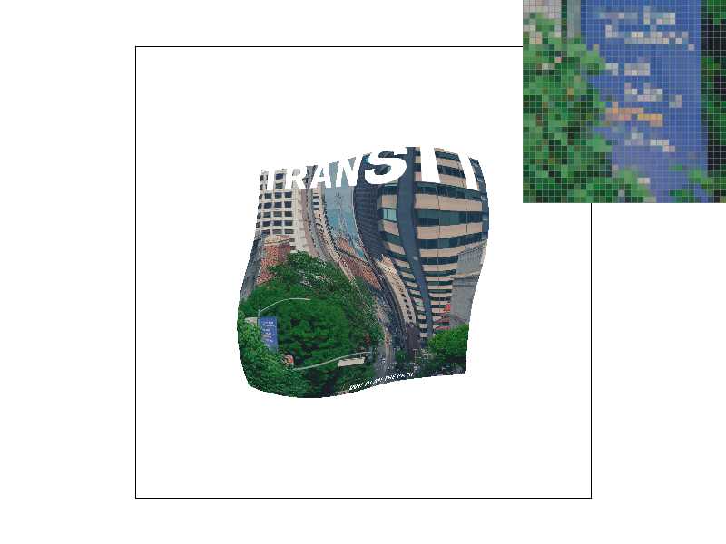

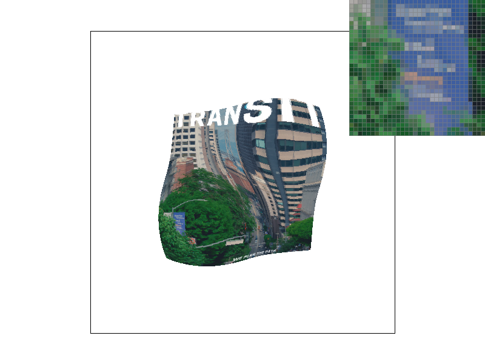

Among the required methods, L_ZERO + P_NEAREST is the fastest but produces the most aliasing, while L_NEAREST + P_LINEAR provides the best visual quality by combining mipmap level selection with smooth texture interpolation.